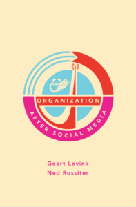

By: Geert Lovink and Ned Rossiter
{kind=link}
Organized networks are an alternative to the social media logic of weak links and their secretive economy of data mining. They put an end to freestyle friends, seeking forms of empowerment beyond the brief moment of joyful networking. This speculative manual calls for nothing less than social technologies based on enduring time. Analyzing contemporary practices of organization through networks as new institutional forms, organized networks provide an alternative to political parties, trade unions, NGOs, and traditional social movements. Dominant social media deliver remarkably little to advance decision-making within digital communication infrastructures. The world cries for action, not likes.
Organization after Social Media explores a range of social settings from arts and design, cultural politics, visual culture and creative industries, disorientated education and the crisis of pedagogy to media theory and activism. Lovink and Rossiter devise strategies of commitment to help claw ourselves out of the toxic morass of platform suffocation.
Published by Minor Compositions, order the book here.
Read online or download here.
Colophon
Organization after Social Media
Geert Lovink and Ned Rossiter
ISBN 978-1-57027-338-4
Cover concept and design by Amir Husak
Interior layout by Margaret Killjoy
Released by Minor Compositions 2018
Colchester / New York / Port Watson
Minor Compositions is a series of interventions & provocations drawing from autonomous politics, avant-garde aesthetics, and the revolutions of everyday life.
Minor Compositions is an imprint of Autonomedia
www.minorcompositions.info | minorcompositions@gmail.com
Distributed by Autonomedia
www.autonomedia.org | info@autonomedia.org